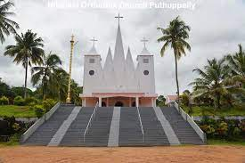

Nilackal Orthodox Church
Nilackal Orthodox Church is one of the prominent churches of the
Malankara Diocese.
About Church

Nilackal Orthodox Church is one of the prominent churches of the
Malankara Diocese. The church, which is in the holy intercession of
twelve apostles, is a sanctuary for thousands of families in this
region. The commemorative feast of the twelve apostles is a major
event conducted in the Nilackal Orthodox Church. The festival usually
falls in the month of June, at a time when monsoons reach God’s Own
Country. Thousands of believers in and around Nilackal attend the
special prayers conducted in the church during the festival days.
Spectacular fireworks are a major attraction of the feast. The
festivities conclude with a colourful procession.
Services
- Prayer
- Holy Mass
- Office
-
Other Organisations
- OCYM
- MarthaMariyam
- SundaySchool
This Week
| Program |
Date |
Time |
| Holy Mass |
July 15 |
7 Am |
| Holy Mass |
July 16 |
7 Am |